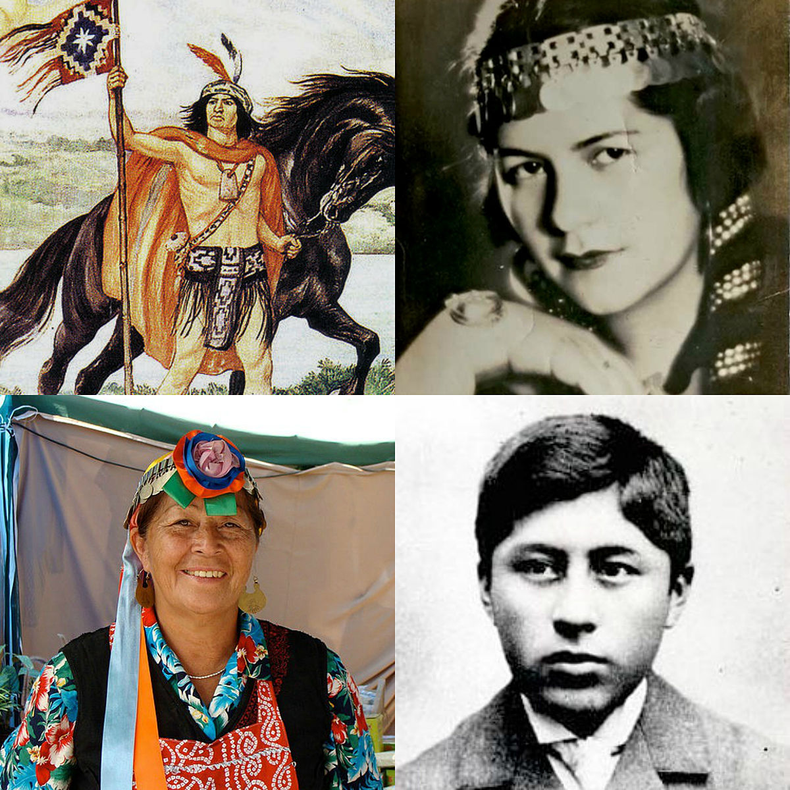
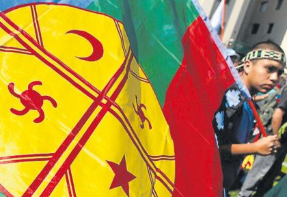
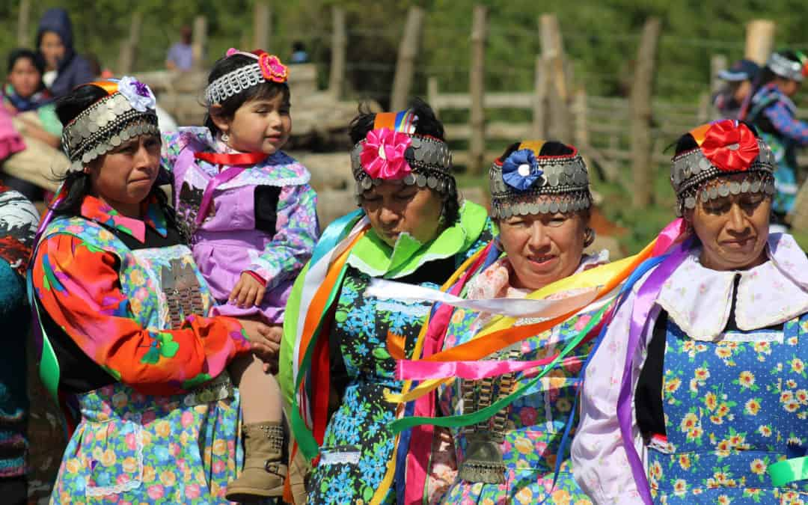
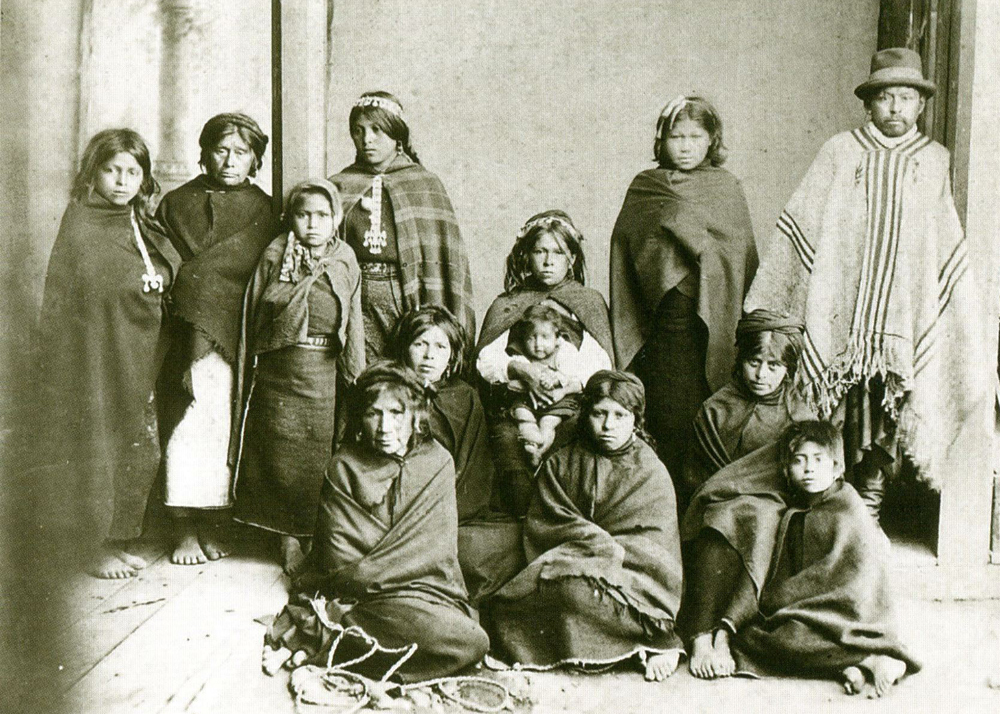
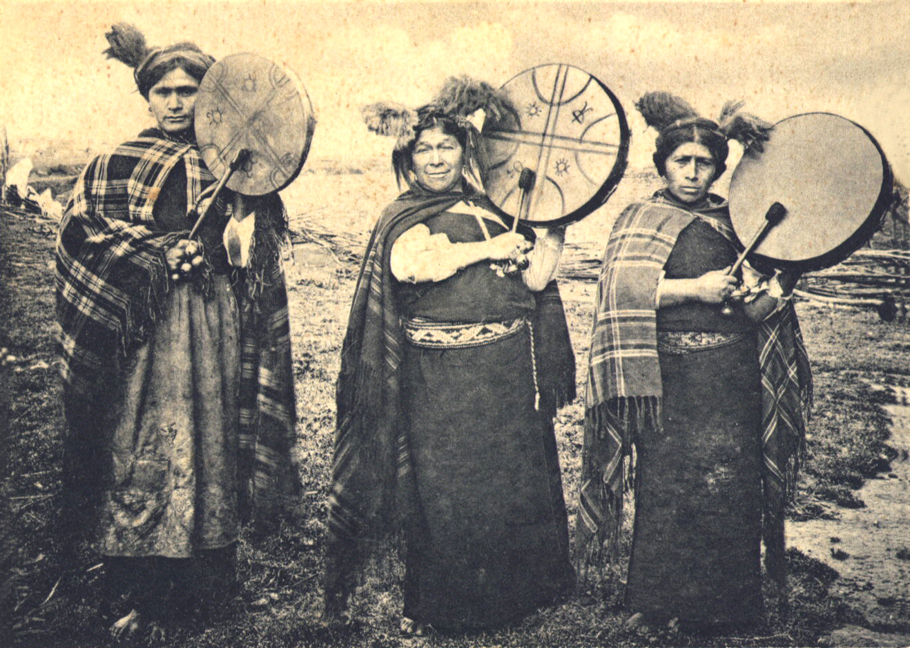

Mapuche
Los mapuches son un pueblo amerindio que habita en Chile y Argentina. De modo genérico abarca a todos los que hablaban o hablan la lengua mapuche o mapudungún, incluyendo a varios grupos surgidos de la araucanización producida entre los siglos XVII y XIX a través de la expansión hacia el este de la cordillera de los Andes.
Origen

El origen de los mapuches es desconocido, solo se tienen hipótesis:
-El arqueólogo austriaco Osvaldo Menghin propuso en 1909 que los mapuches se habrían originado en la Amazonía y que habrían emigrado, pasando por el centro de Argentina y cruzando la cordillera de los Andes. Se sustentaba en los rasgos de su cultura, semejantes con los de un subgrupo de la Amazonía.
-El arqueólogo, etnólogo y folclorista Ricardo E. Latcham postula que migraciones originarias de la pampa argentina y habrían entrado al actual territorio chileno a través de los pasos andinos.12 Esta hipótesis afirmaba que era un pueblo guerrero y seminómada que se habría introducido como una cuña entre los picunches y huilliches, pacíficos y sedentarios, hasta entonces unidos en cultura y territorio
-Tomás Guevara planteó en 1925 un desplazamiento de norte a sur por parte de grupos mariscadores y pescadores, de afinidad con la cultura Tiahuanaco, indicando que las diferencias culturales entre los grupos mapuches del norte, centro y sur se explicaban por el contacto con pueblos extranjeros invasores, es decir, los incas en el siglo XV y los españoles en el siglo XVI
Teoría autoctonista

Al no ser concluyentes ni demostradas ninguna de las hipótesis antiguas, se han realizado numerosos estudios arqueológicos que han descartado las hipótesis de un origen mapuche en las pampas, el Chaco o la Amazonia. Ejemplo de ello son los estudios arqueológicos basado en los descubrimientos del antropólogo estadounidense Tom Dillehay, quien ha encontrado sorprendentes nuevos yacimientos arqueológicos e incluso grandes túmulos de tierra llamados cuel o kwel.
Los estudios arqueológicos de Grete Mostny y Carlos Aldunate han confirmado que, en la temprana unidad cultural, no se aprecian huellas del elemento pampeano postulado antiguamente por Latcham. Así otras nuevas hipótesis sobre el origen de la etnia mapuche, indicarían que el territorio ocupado hoy por Chile antes de la aparición de la cultura mapuche, habría estado habitado por grupos recolectores que no tenían asentamiento fijo, pero sí ocupaban ciertas áreas de manera estable y que vivían de la caza de guanacos y huemules, además de la recolección de moluscos, frutos y semillas.
Según el antropólogo e historiador José Bengoa, «los mapuches al igual que todos los pueblos originarios, fueron los primeros en nombrar los paisajes de Chile», indicando posteriormente que «los antiguos mapuches, según todas las nuevas teorías, serían originarios del propio territorio chileno.
En mayo de 2007, el investigador Patricio Bustamante presentó una nueva hipótesis en la que postuló que la cultura Molle podría haber sido la cultura mapuche arcaica. Esta hipótesis se basó en que la cultura Molle se desarrolló entre el año 1 y el 800 de nuestra era y que los mapuches aparecieron como cultura propiamente tal alrededor del siglo VII.
Organización social

Los mapuche poseían una organización social familiar patrilineal, poligámica, etc. Hoy, la comunidad es un grupo consanguíneo en su mayoría patrilineal, que proviene del otorgamiento de un título de merced a un jefe y su familia.
Organización Politica

El mapuche concibe una organización patriarcal de la familia. El jefe indiscutido de ella es el hombre y sus opiniones y
decisiones son aceptadas sin discusión. Es el representante de los intereses de la familia dentro del grupo.
La prudencia del jefe en su relación con los subordinados era fundamental. Para toda resolución que afectara a la comunidad debía consultar con los demás jefes de familia y no se le aceptaban actitudes de autócrata.
Organización Religiosa

La visión religiosa del pueblo mapuche era politeísta, es decir creían en varios espíritus y dioses. Su ser todopoderoso era el Pillán o Neguechén.
Asimismo, practicaban el culto a los tótemes, entre los que se puede mencionar el cielo (huenu), el sol (antü), el mar (lavquen), el río (lenfu), la piedra (cura) y el agua (co). Cada tribu invocaba a su totem respectivo, cuyo nombre era utilizado en los apellidos y del cual descendía de acuerdo a la alianza entre el Pillán y el tótem.
La creación del mundo según los mapuches:
El pueblo mapuche explica el origen del mundo a partir de la creencia en un gran cataclismo generado por la furia de dos grandes serpientes que se enfrentaron, Kai-Kai y Treng-Treng. Kai-kai empezó a subir las aguas de los mares y Treng-treng comenzó a levantar los cerros para que los mapuches se protegieran. Mientras Kai-Kai más subía las aguas, Treng-Treng más levantaba los cerros. De ese modo, muchos mapuches se ahogaron y, a medida que ocurría esto, Treng- Treng los convertía en peces o en piedras, para que vivieran de otra forma. Después de esto, cesó la lucha, Kai- Kai abandonó el combate y se hundió en el mar. De esta manera surgieron los diferentes elementos de la tierra, que fueron vistos como los linajes de las piedras, de los peces y de las aves, entre otros.